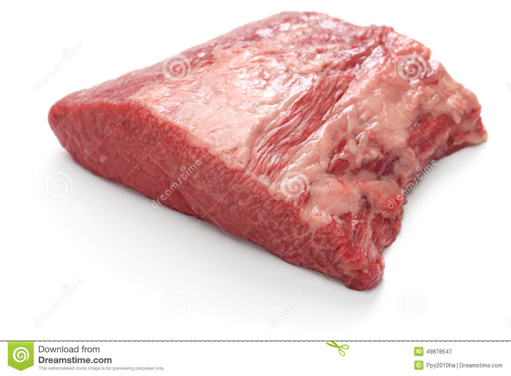

Beef Brisket

Image source:
Royalty-free stock photo
Description
Basically you cook the brisket covered at 275 degF for at least 8 hr, and longer is fine too.
Ingredients
- Beef Brisket, whole (~15 lb)
Tools
- 1 very large baking pan
- Aluminum foil
- Potholder
Steps
- The brisket was a small one, 13.53 lb.
- I did 275 °F covered overnight for 9 hr. (21:30 - 06:30).
- In the morning, I uncovered and increased temperature to 320 °F for 1 hr. This step could be improved, because there was some burnt taste in the melted fat in the pan. Perhaps it would have been good to drain the melted fat from the pan before increasing the temperature; perhaps it would have been good to drain the fat even earlier in the 9 hr period.
- So it was around 07:30 I was done with yoga and crunches and I started harvesting some meat. I moved the brisket to a different pan so that the melted fat was in the original pan. It had water in it still, like gravy water. Regardless, I put the pan into the fridge to solidify (after emptying some out into a bowl with a tablespoon so the fat wouldn't spill).
- After eating a slice of meat (sliced off the thin/ narrow end), I re-covered the meat and put it back in the oven, this was around 08:00. I changed the temperature to 205 °F.
- I left the covered meat in the over at 205 °F until, at 12:55, I increased the temperature to 235 °F. Finally at 14:55 I took out the meat permanently.
- Much of the meat was fork-tender. In the thickest part, I found some gristle-adjacent that was still tough. That suggests I could have left it cooking even longer, as long as it was covered. There was also no indication that any parts were becoming overcooked, thus also suggesting I could cook it even longer, as long as it was covered.